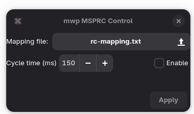
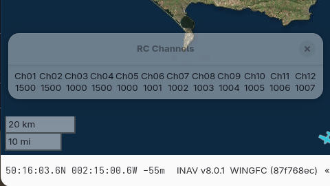
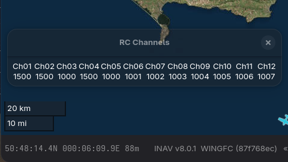

mwp HID Device Support#
Overview#
From 25.05.07, mwp supports using a HID (Human Input Device) to provide RC (stick / switch inputs) to the FC. An example of this might be running mwp on a game console such as SteamDeck and using the SteamDeck HID (sticks, buttons) to provide TX functions.
While mwp provides functionality for doing this, it is not condoned as an acceptable way of controlling a UAS. Using NSP_SET_RAW_RC (aka MSPRC) over a MSP telemetry link cannot provide the update rate / performance / reliability / safety of a standard RC TX/RX.
- Lower control update rate as the RC messages have to interleaved with other telemetry.
- Lower control update rate as the stream is half duplex and 90% of the messages require an acknowledgement.
- Still have to meet INAV's hard real time refresh rate.
- Inefficient message format (e.g. 16 bits per channel vice 11 bits / channel (cf. sBUS, CRSF)).
- The dedicated RC TX can perform additional optimisations in terms of data sizes, refresh rate for switch channels etc.
A dedicated RC RX has smaller, efficient messages delivered much more frequently, such that if one is dropped it doesn't really matter. Interleaving MSP_SET_RAW_RC within a stream of maybe 9 other telemetry messages means a signification reduction in RC performance. Caveat Emptor!
Caveats#
- Not supported for "old" INAV (at least prior to 2.0).
- mwp's HID implementation supports the same number of RC channels as does your flight controller (for
MSP_SET_RAW_RC). - mwp will send the lesser of the number of channels supported by the FC and the number of channels defined in the RC mapping file.
Prerequisites#
- Telemetry radio capable sustaining of at least 12 MSP messages / second.
- mwp uses
MSP_SET_RAW_RC(this may preclude use of some mLRS configurations). - Either the FC is configured with
USE_MSP_RC_OVERRIDEand appropriatemsp_override_channelsor the FC is configured forset receiver_type = MSP - It is recommended that you have a validated failsafe solution.
RC Mapping File#
It is necessary to generate a mapping file that maps the HID device (e.g. game controller, joystick) inputs to RC functions (sticks / buttons).
mwp's uses the well known SDL (Simple DirectMedia Layer) library. This library handles numerous input devices (Joysticks, Game Controllers) in well defined manner across multiple platforms.
mwp provides a tool mwp-hid-test to allow the user to identify the inputs on their HID devices and allocate / map inputs to RC Channels. SDL provides for the following HID inputs:
- Axes : "Sticks" and some switches (3 or more positions).
- Buttons : Some switches (2 position, momentary).
- Hats : ?
- Balls : ?
Note that "Hats" and "Balls" are effectively undefined in mwp's reference implementation solely because the author has no example of such devices.
mwp-hid-test tool#
The user plugs in the required HID controller and starts the application (from a shell / terminal). She can then exercises all the required (stick / switch / button) inputs. mwp-hid-test will record the input, best shown by example:
$ mwp-hid-test
There are 1 joysticks connected.
Entry 0, OpenTX Radiomaster Boxer Joystick guid=0300c19b09120000544f000011010000 game controller=true
Name: OpenTX Radiomaster Boxer Joystick
No. axes 8
No. balls 0
No. buttons 24
No. hats 0
Joystick 0 connected
....
Axis 2 value -32608.
....
Button 1 released.
....
Joystick 0 removed.
In the above example, mwp-hid-test application is started, the device (Boxer radio in HID mode) is detected. If multiple devices are detected, the user will be asked which entry they wish to use.
In the example above:
- The user moved the throttle stick, this is identified as "Axis 2"
- The user moved switch "SF", this is identified as "Button 1".
After exercising all required inputs, the user should prepare a mapping file; this is a simple plain text file mapping "Axis" and "Button" inputs to RC Channels (RC channels numbered from 1). For example:
$ less boxer.txt
# Sticks
Axis 0 = Channel 1 ; Aileron
Axis 1 = Channel 2 ; Elevator
Axis 2 = Channel 3 ; Throttle
Axis 3 = Channel 4 ; Rudder
# Switches
Axis 4 = Channel 5 ; SE (Arming)
Axis 5 = Channel 6 ; SA
Axis 6 = Channel 7 ; SB
Axis 7 = Channel 8 ; SC
Button 0 = Channel 9 ; SD
Button 1 = Channel 10 ; SF
$
- Blank lines, lines starting with # or ; are ignored
- Trailing items after ; or # are ignored (comments / notes).
Definition lines are of the form Axis N = Channel X or Button M = Channel Y.
- The
Axis NorButton Mdata is that shown bymwp-hid-test. The Channel is the RC channel for that input. - mwp maps the value from SDL (-32608 to 32607) to RC range 1000-2000. Buttons are mapped from off = 1000 to on = 2000.
- It is possible to set an input as inverted, latched or define a deadband.
RC Map
The first four channels must reflect the RC Map as defined in the flight controller (or AERT for Multiwii), as channels are not reordered when sent to the FC.
Sanity Checking
Currently, there is NO sanity checking on the mapping file. Until (or even after) sanity checking is implemented, you are advised to validate the file with mwp-hid-server --check FILE to verify that all inputs result in the expected channel values.
For example:
$ cat /tmp/mh2.txt
# Axis
# Buttons
Button 0 = Channel 17 ;
Button 1 = Channel 18 ;
$ mwp-hid-server --check /tmp/mh2.txt
Button 0: channel 17, ctype 0, lval 0, lmax 2
Button 1: channel 18, ctype 0, lval 0, lmax 2
Channel 1 undefined
Channel 2 undefined
Channel 3 undefined
Channel 4 undefined
Channel 5 undefined
Channel 6 undefined
Channel 7 undefined
Channel 8 undefined
Channel 9 undefined
Channel 10 undefined
Channel 11 undefined
Channel 12 undefined
Channel 13 undefined
Channel 14 undefined
Channel 15 undefined
Channel 16 undefined
Channel 17 Button 0
Channel 18 Button 1
*** Note: Undefined channels ***
For Game Controllers, it is (probably) possible to provide a SDL Mapping file as a parameter to mwp-hid-test (for example, see https://github.com/mdqinc/SDL_GameControllerDB), that may possibly) help the SDL library to manage the device.
$ mwp-hid-test gamecontrollerdb.txt
# Sticks
Axis 2 = Channel 1 ; Aileron
Axis 3 = Channel 2 invert ; Elevator
Axis 1 = Channel 3 invert ; Throttle
Axis 0 = Channel 4 ; Rudder
# Switches
Button 9 = Channel 5 ; SE (Arming) (L1)
Axis 4 = Channel 6 ; SA (L2)
Button 10 = Channel 7 ; SB (R1)
Axis 5 = Channel 8 ; SC (R2)
# More switches
Button 12 = Channel 9 ; SD (R3)
Button 13 = Channel 10 ; SF (L3)
Button 14 = Channel 11 ; SG (R4)
Button 15 = Channel 12 ; SH (L4)
# Buttons
Button 0 = Channel 13 ; SI (A)
Button 1 = Channel 14 ; SJ (B)
Button 2 = Channel 15 ; SK (X)
Button 3 = Channel 16 ; SL (Y)
# Unused:
# Touchpads, D-Pad, Menu, Stick Press
# Maybe use for local configurations and triggers
Note the use of invert. Mapping file courtesy of GH user @arealmess.
The invert modifier#
Inverts the input. May be applied to axes and buttons.
The latch modifier#
Provides a latch function for momentary action buttons.
latchimplements the default 2-pole latching switch;latch=Nimplements an N-pole latching switch (N = 2 - 6).
Pressing the latched switch toggles the channel value, so with the mapping line:
Button 1 = Channel 10 latch=3 ; SF
Repeatedly pressing the button would result in channel values of (inital value)1000 => 1500, 2000, 1000, 1500, 2000, 1000, 1500, 2000. Note that the values wrap rather than go up/down like a mechanical switch.
Inverted latches are also valid.
Button 1 = Channel 10 latch=3 invert ; SF
mwp-hid-test usage#
$ mwp-hid-test --help
Usage:
mwp-hid-test [OPTION?]
Help Options:
-h, --help Show help options
Application Options:
-d, --deadband Deadband (in SDL frame of reference)
Note that deadband is applied in terms of the SDL resolution, so 1 microsecond of RC PWM is equivalent to c. 65 SDL units.
Mapping file with deadband#
The mapping file supports deadband and invert, for example:
$ less boxer.txt
# Sticks
Axis 0 = Channel 1 ; Aileron
Axis 1 = Channel 2 ; Elevator
Axis 2 = Channel 3 ; Throttle
Axis 3 = Channel 4 invert ; Rudder
# Switches
Axis 4 = Channel 5 ; SE (Arming)
Axis 5 = Channel 6 ; SA
Axis 6 = Channel 7 invert ; SB
Axis 7 = Channel 8 ; SC
Button 0 = Channel 9 invert ; SD
Button 1 = Channel 10 ; SF
deadband = 200
deadbandis a global option and is specified with thedeadbandkey and a value in the range 1-1024 (in SDL resolution, c. 15 PWM us).invertis a per-channel keyword. Addinvertafter the channel number and before any trailing comment.
In the above example, channels 4, 7 and 9 will be inverted.
mwp-hid-server#
mwp does not communicate directly with the HID device, this is done by an intermediate program, mwp-hid-server using a simple line orientated, text based protocol. Normally, this is transparent to the user, as mwp handles the invocation of and communications with mwp-hid-server. It is, however, possible to run mwp-hid-server manually to test your RC mapping file. In addition, having a simple, defined protocol allows other mapping implementations (e.g. other than SDL) to be implemented.
mwp-hid-server usage#
$ mwp-hid-server --help
Usage:
mwp-hid-server [OPTION?] rc-mapping-file
Help Options:
-h, --help Show help options
Application Options:
-v, --verbose Verbose mode
-f, --fake Fake values (for testing without HID hardware)
-p, --port=31025 Udp port
rc-mapping-fileis the simple text file that maps the capabilities of the HID device to RC Channels. This was discussed above.verbosewill display channel values every 10 seconds.
mwp-hid-server command language#
The mwp-hid-server server listens on a defined UDP port (default 31025) for the following commands:
raw: Returns an array of int16 values, little endian, representing RC channel values..info: Returns information (free form text) on the connected HID device.quit: Terminates the servertext: Returns a text string of space separated channel values.set: sets RC data for the RC channels. Data is provided as a set of space separated values, for exampleset 1600 1700 1010 1889.
mwp uses only the info and raw commands.
The mwp-hid-server also accepts commands on STDIN and replies to STDOUT. This is used when spawned by mwp, to mitigate some Windows' startup synchronisation issues.
mwp-hid-cli#
mwp-hid-cli is a simple command line tool to investigate the hid server. This allows the user to send the server commands listed above to a running mwp-hid-server.
$ mwp-hid-cli
udp conn 127.0.0.1:38668 127.0.0.1:31025
> info
OpenTX Radiomaster Boxer Joystick Axes: 8 Buttons: 24
> text
1500 1500 1000 1500 1000 1001 1002 1003 1004 1005 1006 1007 1009 1010 1011 1012
> quit
You should ensure that any manually invoked test mwp-hid-server is closed before using the HID function with mwp. It is not advisable to issue the raw command in the test environment, as your terminal may not handle the raw data with any elegance.
mwp UI#
HID support is selectable at run time via mwp's Edit > MSP RC Setting menu option. Note, this option is only sensitive when the main serial port is closed, so you cannot change an open MSP session.

If enabled, mwp-hid-server is invoked with the provided mapping file. If you need to pass another option to mwp-hid-server (for example -f for testing), this may be done using the environment variable MWP_HIDOPT, for example MWP_HIDOPT=-f.
By default (if no mapping file has been previously set), the settings UI looks for the mapping file in the mwp configuration directory ($XDG_CONFIG_HOME/mwp i.e. ~/.config/mwp on POSIX OS, %LOCALAPPDATA%\mwp\ on Windows). The user may select any other suitable location in the file chooser..
With mwp's HID / MSP_SET_RAW_RC enabled, when the main telemetry channel is started, the "stick display" icon will show in the bottom right of the map:

This may be expanded (click on the icon) to show the sticks.

This may be iconised again by right click.
Channel value display#
It is possible to have mwp display channel values (theme sensitive):

or

The user will have to add their own "hot key" / keyboard accelerator to active the "show-channels" action, for example:
### ~/.config/mwp/accels / %LOCALAPPDATA%\mwp\accels ###
# bind "show-channels" to the F2 key
show-channels F2
Then toggling F2 will display / close the channels window.
Enable and Activate#
mwp's HID implementation distinguishes between Enabled and Activated as follows:
Enabled : In the MSPRC settings dialog means that the mwp-hid-server will start when an MSP port is started and stop when the MSP port is closed. This is a prerequisite for MSPRC.
Activated: This means that that mwp will use data from the mwp-hid-server to send MSP_SET_RAW_RC to the FC.
When MSPRC is Activated, then mwp will first interrogate the FC MSP_RC to set the current RC channels. This is used to set the value for latch buttons.
After MSP_RC has been received, mwp will use data from the mwp-hid-server to send MSP_SET_RAW_RC to the FC.
The MSPRC function may be Activated / Deactivated as required while a MSP port is active.
Activate is controlled from the File > Edit menu.
At startup, the Activate menu option is set from Enabled setting (but can be changed on demand). It is not currently persisted.
Here's an older log fragment showing this: (Numbers in brackets) are explained below:
21:06:11.522260 :HID DBG: pid=255325 53 (1)
21:06:11.522296 Send HID Info (2)
...
21:06:11.550794 Raw RC: 22 No joystick connected (3)
21:06:11.581800 INAV v8.0.1 SITL (171d00bb) «BENCHYMCTESTY»
21:06:11.581900 Load FC safehomes
21:06:11.803174 :DBG: Clear poller state MWP_SERSTATE_NORMAL
21:06:11.803204 Save home d/l done
21:06:11.803222 Load FC Geozones
21:06:11.803630 :DBG: MSP_RC size 68 (4)
21:06:11.806114 :DBG: Read 4 geozones
21:06:11.813640 :DBG: Clear poller state MWP_SERSTATE_NORMAL
21:06:11.813690 Geozones validated
21:06:11.848278 Sensors: Acc Baro GPS (00cb)
21:06:11.848310 INAV v8.0.1 SITL (171d00bb) «BENCHYMCTESTY»
21:06:11.848355 Poller cycle for 9 items, 81 / 226 bytes (INAV_STATUS,ANALOG2,NAV_STATUS,RAW_GPS,COMP_GPS,GPSSTATISTICS,WP,ATTITUDE,ALTITUDE)
21:06:11.848391 Start poller
21:06:11.854382 Request RTC pos: 54.355194 -4.523159 sats 16 hdop 100.0
21:06:11.855258 RTC local 2025-05-13T21:06:11.855, fc 2025-05-13T21:06:11.000
21:06:13.386745 Arming flags: Geozone (0060), load 0% MSP_CMDS_INAV_STATUS (5)
21:06:31.669714 :DBG: msprc action set to false, use_rc=1 (6)
21:06:32.576143 Arming flags: Geozone,RC Link (40060), load 0% MSP_CMDS_INAV_STATUS (7)
21:06:53.180132 :DBG: msprc action set to true, use_rc=53 (8)
21:06:53.185002 :DBG: MSP_RC size 68 (9)
21:06:54.080304 Arming flags: Geozone (0060), load 0% MSP_CMDS_INAV_STATUS (10);
...
21:07:00.456903 Serial closed replay 0 (11)
21:07:00.457042 48.952s, rx 192615b, tx 84171b, (3935b/s, 1719b/s) to 0 wait 0, avg poll loop 5 ms messages 8609 msg/s 175.9
- MSPRC setting was enabled, so the
mwp-hid-serveris started - mwp asks the hid for controller info.
Fakewas set viaMWP_HIDOPT=-f; so no joystick is reported as expected. mwp will scheduleMSP_RCto get current channel values.- The
MSP_RCresponse is reported (not yet acted upon), this schedulesMSP_SET_RAW_RC. - The next polled
MSP2_INAV_STATUSreports that the only blocker is "Geozone" (expected for this scenario). In particular "RCLink" is NOT a blocker. - The user uses
File > Edit > Activate MSP RCto Deactivate MSPRC. - The next polled
MSP2_INAV_STATUSreports that the blockers are Geozone" and "RCLink", showiing mwp is no longer schedulingMSP_SET_RAW_RC. - The user uses
File > Edit > Activate MSP RCto Activate MSPRC again. - The
MSP_RCresponse is reported (not yet acted upon), this schedulesMSP_SET_RAW_RC. - The next polled
MSP2_INAV_STATUSreports that the only blocker is "Geozone" (expected for this scenario). In particular "RCLink" is NOT a blocker. - The user closed the MSP port, ending the experiment.
Some of the text is changed in later versions, but the flow is the same.
mwp settings#
The MSP RC settings are persisted via the following settings:
msprc-cycletime(default 150ms)msprc-enabled(default false)msprc-full-duplex(default false)msprc-settingsRC mapping file (default not set)
The msprc-cycletime option defines how often mwp sends MSP_SET_RAW_RC messages. INAV requires at least 5Hz (200ms) to avoid fail-safe. Time slots used for MSP_SET_RAW_RC reduces the time available for MSP telemetry data displayed by mwp, so the user needs to choose a compromise setting that balances RC responsiveness with telemetry data refresh within the constraint of the available bandwidth.
The msprc-full-duplex settings defines the use of full duplex transmission for MSP_SET_RAW_RC messages. This will better ensure that the cycle-time requirement is met, as "no reply" MSP_SET_RAW_RC are sent independently of the normal MSP telemetry poller.
Device Dependency
If the device does not support full duplex, enabling msprc-full-duplex will result in major telemetry failure.
mwp attempts to detect excessive timeouts due to msprc-full-duplex being set on a half-duplex device, and will disable msprc-full-duplex in such cases.
Miscellaneous notes#
- The hard part of this is arbitrating serial usage between the need to maintain INAV's requirement for
MSP_SET_RAW_RC(minimum of 5Hz refesh) and mwp's telemetry requirement (minimum say (also) 5 MSP/sec, though it this is not a hard limit, rather a usability desire). - You may consider using
USE_MSP_RC_OVERRIDE/MSP RC Overrideand a backup TX. - Note that mwp tries to send
MSP_SET_RAW_RCmessages every 150 milliseconds (c. 7Hz) by default. This interval is configurable. The default was chosen to minimise the chances of fail-safe while maintaining a decent telemetry rate. - When the
mwp-hid-serveris started, mwp gets the current RC values from the FC. If the FC has valid RC data, themwp-hid-serverassumes these values.
Serial Usage Metrics#
mwp can monitor MSP message rates and automatically log the information. If you are testing this MSP_SET_RAW_RC functionality in mwp, consider adding the following to ~/.config/mwp/cmdopts / %LOCALAPPDATA%\mwp\cmdopts:
MWP_STATS_LOG=60
This will log MSP throughput every minute into mwp_stderr_YYYY_MM_DD.txt.
Throughput example#
Telemetry device: Ebyte E220 LoRa, 115200 ground speed, 38400 air speed, USB connection to GCS.
mwp_stderr_YYYY-MM-DD.txt file with lines like:
13:13:30.168812 900.267s, rx 341851b, tx 139948b, (380b/s, 155b/s) to 0 wait 0, avg poll loop 62 ms messages 15046 msg/s 16.7
...
13:14:15.113726 945.195s, rx 358998b, tx 146799b, (380b/s, 155b/s) to 0 wait 0, avg poll loop 62 ms messages 15797 msg/s 16.7
Telemetry device: Ebyte E220 LoRa, 115200 ground speed, 62500 air speed, USB connection to GCS. Slightly higher throughput at the expense of some message timeouts (and maybe also range).
11:36:04.735320 2100.442s, rx 659187b, tx 712573b, (314b/s, 339b/s) to 2 wait 0, avg poll loop 88 ms messages 36053 msg/s 17.2
This device appears usable.